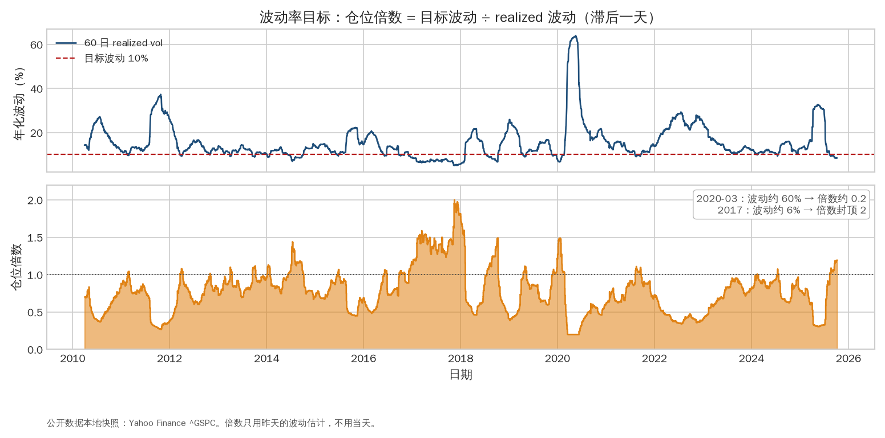
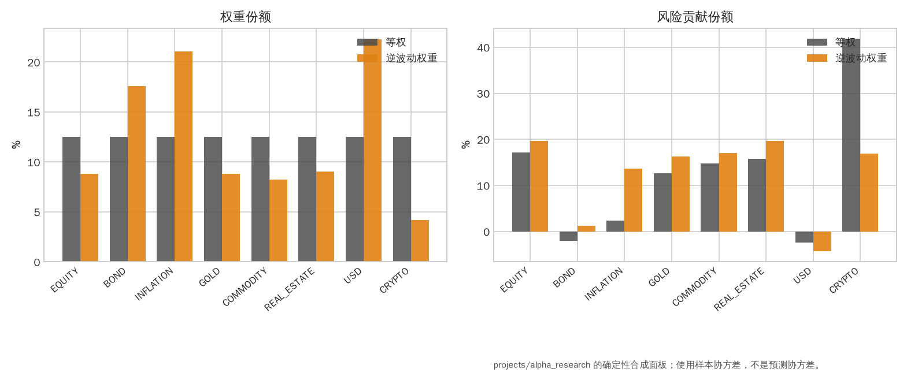
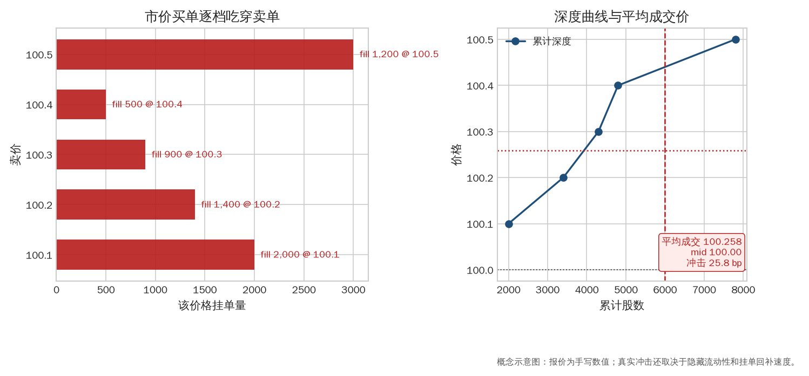
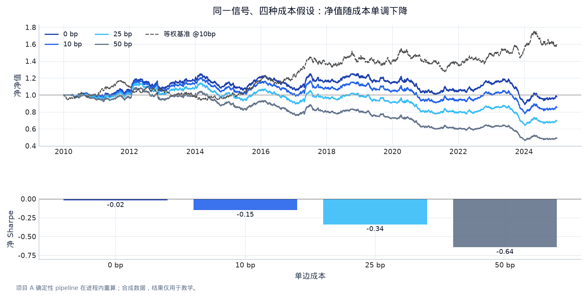
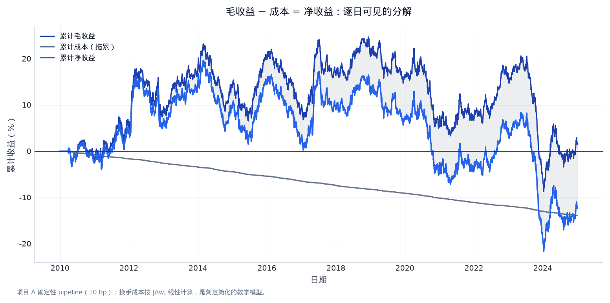

第六章：组合构建、执行与风险控制（Portfolio Construction, Execution and Risk）¶
同一个 alpha，在不同仓位、订单和风险限制下可以产生完全不同的结果。量化研究要从“预测”走到“能下单、能承受、能监控”，本章负责这一步。
0. 学习目标¶
完成本章后，你应当能够：
- 区分 target position、order、fill、cash、mark-to-market 和 PnL；
- 用 volatility scaling、risk parity、factor neutralization 和约束优化构建组合；
- 解释 bid/ask spread、market impact、slippage、latency、queue position、borrow 和 financing；
- 选择 market、limit、VWAP、TWAP、POV 等订单/执行方法的适用场景；
- 设计 gross/net、单名、行业、杠杆、流动性、止损和 kill switch 风险限制；
- 做 PnL attribution、压力测试和容量分析。
1. 从预测到目标仓位¶
1.1 Target position 与 order 的区别¶
模型产生的是 signal 或 expected return；组合层把它映射成 target position；交易系统比较当前 position 与 target，生成 order；市场最终只会返回部分或全部 fill。
如果当天无法全部成交，下一时点的当前仓位仍然不同，系统需要重新计算剩余订单。把 target 当成 fill 会高估策略完成度并低估执行风险。
1.2 Signal 到权重¶
最简单的方向策略：
更连续的策略：
再做总暴露归一化。若资产波动不同，可使用 inverse-volatility scaling：
其中 \(\hat\sigma_i\) 是只用过去数据估计的波动。它不是“波动越低越安全”的保证，因为低波动可能是价格陈旧、隐含杠杆或尾部尚未发生。
2. 风险目标与仓位规模¶
2.1 Volatility targeting¶
若组合预测波动为 \(\hat\sigma_{p,t}\)，目标年化波动为 \(\sigma^*\)，杠杆缩放可写成：
波动升高时降低仓位，波动降低时增加仓位。实际必须加入平滑、最小/最大变动、保证金和交易成本，否则波动估计噪声会造成频繁交易。

图 6-1｜波动率目标自动去杠杆。 上方面板是 60 日 realized 年化波动与 10% 的目标线，下方面板是仓位倍数 = 目标 ÷ realized（滞后一天、截断在 0.2–2）。2020 年 3 月波动冲到约 60% 时倍数降到约 0.2，2017 年低波动期倍数封顶 2：风险预算不变，名义仓位随环境变化。数据类型：公开数据本地快照（Yahoo Finance ^GSPC）；仅用于教学。
2.2 Risk parity¶
若组合希望各资产对风险贡献相近，资产 i 的 marginal risk contribution 为：
total risk contribution：
Risk parity 不是简单等权，也不保证收益最高；它依赖协方差估计和约束。高相关资产仍可能共享同一风险来源。

图 6-2｜权重不等于风险贡献。 左图是两种权重方案的权重份额，右图是对应的风险贡献份额（w_i (Σw)_i / w'Σw）。等权组合里高波动资产贡献了远超其权重的风险；逆波动权重把风险贡献拉得更均匀，但并不保证收益更高。数据类型：projects/alpha_research 合成面板的样本协方差。
2.3 Factor neutralization¶
若不想让 alpha 只是市场 beta，可以回归资产特征/权重对风险因子：
保留残差 \(u\) 并归一化，使组合对已知因子的暴露接近 0。中性化会增加换手、降低容量或删除有经济意义的风险溢价，因此要把成本和目标一起评估。
3. 协方差、优化与稳健性¶
均值-方差形式：
约束可能包括：
- \(\hat\mu\)：预测收益；
- \(\hat\Sigma\)：协方差；
- \(G\)：gross 上限；
- \(c_i\)：单名上限；
- \(A^Tw\)：行业、国家、beta 或流动性暴露。
预测均值误差通常远大于协方差优化能弥补的精度。实务中会 shrink expected returns、使用 factor covariance、提高约束、加入 turnover penalty，或者把优化结果与简单分位数权重混合。
4. 市场微观结构（Market Microstructure）¶
4.1 Bid/ask 和立即成交成本¶
主动买单通常穿过 ask，主动卖单穿过 bid。相对 mid 的半价差是最直接的显性成本，但实际还包括：
- slippage（滑点）：预期价格与成交价差；
- market impact（市场冲击）：订单改变价格；
- latency（延迟）：信号、网络、撮合和回报之间的时间；
- queue position（队列位置）：限价单能否在价格前移前成交；
- adverse selection（逆向选择）：成交后价格朝不利方向变化；
- fees/rebates（手续费/返佣）；
- borrow/financing（借券/融资）。
4.2 订单簿和成交概率¶
限价订单在 bid/ask 上等待，可能享受价格改善但承担不成交和被知情交易者选择的风险。市价单通常提高成交确定性但穿越 spread。订单簿深度、撤单率、成交速度和价差随时段变化，不能用日均成交量完全替代。

图 6-3｜大单为什么成交在更差的价格。 左图是五档卖单及 6,000 股市价买单的逐档成交；右图累计深度曲线显示该订单把价格从 100.1 推到 100.5，平均成交价约 100.213，相对 mid 100.00 的冲击约 21 bp——这还没算隐藏流动性和回补。数据类型：概念示意图（手写报价）。
5. 执行算法（Execution Algorithms）¶
- Market order：立即成交，价格不确定；适合紧迫、流动性足够的订单。
- Limit order：限定最差价格，可能不成交；适合不紧迫或希望提供流动性。
- TWAP（Time-Weighted Average Price）：按时间均匀拆单，简单但忽略成交量和信息。
- VWAP（Volume-Weighted Average Price）：按历史/预测成交量曲线拆单，适合跟随日内流量。
- POV（Percentage of Volume）：按实时市场成交量维持参与率，能控制冲击但成交时间不确定。
- Implementation shortfall：在紧迫性、价格风险和冲击之间优化，适合有预期 alpha decay 的订单。
选择执行方法要问：alpha 多久衰减、订单相对 ADV 多大、spread 和波动怎样、是否有硬性截止时间、限价未成交的机会成本是什么。
6. 交易成本模型¶
6.1 线性教学模型¶
适合早期 sanity check。至少做低、中、高成本敏感性。
6.2 冲击的非线性直觉¶
常见简化形式：
其中 \(Q_i\) 是订单数量、\(ADV_i\) 是平均日成交量、\(\sigma_i\) 是波动、Y 是经验常数。它说明订单占市场比例提高时，成本不是简单线性增长。此公式只是研究起点，不应直接当成生产报价。
6.3 Cost-aware backtest¶
回测应保存：预期交易价格、实际 fill、数量、spread、手续费、冲击、现金和持仓。不要只在最终收益上扣一个总数，因为成本会改变仓位路径、换手和下一期信号。

图 6-4｜成本单调性是不变量。 上方面板是项目 A 同一信号在四种单边成本假设下的净净值曲线，加一条等权基准；下方面板是对应净 Sharpe。成本越高净值越低、Sharpe 越差，这条单调性是回测会计正确性的检查项：若出现成本更高反而更好，先查代码。数据类型：projects/alpha_research 确定性 pipeline 在进程内重算（合成数据，教学结果）。
7. PnL、风险归因与监控¶
每日 PnL 可以拆为：
- price PnL：标的价格变化；
- carry/dividend/roll：现金流或展期；
- FX PnL：报告币种换算；
- execution PnL：相对 mid/arrival price 的执行差；
- fees/borrow/financing；
- model/hedge residual：未解释部分。

图 6-5｜PnL 分解：毛 − 成本 = 净。 三条累计曲线分别是毛收益、成本拖累（单调向下）和净收益，浅色带是成本吃掉的部分。把 PnL 拆成可见的几项，才能在结果变差时知道是信号失效还是成本假设失真。数据类型：projects/alpha_research 确定性 pipeline（10 bp，成本按 |Δw| 线性计算的教学模型）。
生产监控至少包括：
- position、gross/net、杠杆和 margin；
- 单名/行业/国家/因子暴露；
- daily PnL、drawdown、cost 和 turnover；
- 数据新鲜度、缺失、价格跳变和时钟同步；
- 订单拒绝、成交率、延迟和限价未成交；
- 模型输入分布、预测分布和 live-vs-backtest drift；
- kill switch：异常价格、超额仓位、连接问题或风险超限时停止下单。
8. Capacity（容量）与规模¶
策略容量是规模增加后仍能实现目标收益/风险的最大资金量，不等于市场平均成交量。要考虑：
- 单名 ADV、spread、深度和可参与比例；
- 多资产在同一时段同时交易造成的冲击；
- 借券、保证金、融资和交易对手；
- alpha 衰减速度和订单紧迫性；
- 极端市场中流动性同时下降。
做容量曲线：横轴资金或参与率，纵轴净 Sharpe/净收益/最大冲击。若只有极小规模才赚钱，研究结论应如实写出。
9. Stress testing（压力测试）¶
至少设置：
- 股票指数 -10%、-20%；
- 利率平移 +100 bps、曲线陡峭化；
- FX 跳变、商品跳空；
- spread 变为 2–5 倍，ADV 降低 50%；
- 交易延迟一个或多个 bar；
- 相关性向 1 收敛；
- 关键数据源缺失或模型输出异常。
压力测试不是预测情景概率，而是检查系统是否在合理坏状态下有可控损失、足够流动性和明确响应。
10. 风险限制的层次¶
- hard limit：单名、行业、gross、净、杠杆、订单大小和保证金硬上限；
- soft limit：接近阈值时减仓、告警或要求人工复核；
- model limit：预测置信度、输入漂移、缺失率和异常分数；
- operational limit：连接、时钟、重复订单、权限和 kill switch；
- drawdown response：达到阈值后降低风险、暂停策略或重新审查机制。
限额不是为了把所有风险归零，而是让失败模式在可承受范围内可见、可追踪、可处理。
11. 常见误解¶
- “仓位小就不用考虑执行。” 高频/高换手即使仓位小也可能被 spread 吃掉。
- “净暴露为零就是 market neutral。” 仍可能有 beta、行业、流动性、波动和尾部暴露。
- “限价单没有成本。” 不成交有机会成本，成交后还可能有 adverse selection。
- “波动目标能自动控制风险。” 跳跃、延迟、杠杆上限和相关性突变会让缩放失效。
- “风险限额只需要研究结束后检查。” 交易前约束和实时监控决定策略是否能继续活着。
12. 手工练习¶
练习 A：仓位缩放¶
两资产权重各 50%，预测年化波动 20%。目标组合波动 10%。若相关性为 0.2，先计算组合波动，再计算是否需要降低杠杆。加入最大杠杆 1.2 后，写出最终缩放规则。
练习 B：执行选择¶
一笔订单占该资产日均成交量 15%，alpha 预计 30 分钟内衰减一半，spread 较窄但波动突然上升。比较 market、limit、POV 和 implementation shortfall 的取舍，说明你会监控什么。
练习 C：PnL 归因¶
策略毛收益 +100 bp，执行相对 mid -25 bp，手续费 -10 bp，借券 -15 bp，beta 因子贡献 +80 bp。剩余 alpha 约是多少？为什么不能直接把剩余项称为“纯 alpha”？
Almgren–Chriss 执行直觉¶
设一笔订单在若干时段内完成，x_t 是时点 t 尚未成交的数量，交易量 v_t=x_{t-1}-x_t。执行价格可以拆成：参考价格、bid–ask 与手续费、临时冲击（temporary impact）和永久冲击（permanent impact）。一个常见的教学目标是
其中 lambda 代表对风险的厌恶。执行越快，通常临时冲击更高但暴露时间更短；执行越慢，冲击可能下降但价格在未完成期间更容易波动，且 alpha 可能衰减。这解释了为什么 market、limit、TWAP、VWAP、POV 和 implementation shortfall 没有脱离上下文的“最佳答案”。
项目 A 的 turnover × cost_bps 只模拟平均摩擦，不能称为最优执行。升级时可依次加入：按 order/ADV 增加冲击、区分 spread 与 fee、模拟部分成交和机会成本、比较不同执行速度，并在报告中保留成本分解。任何执行改进都必须在同一信号和同一信息时点下比较，否则改善可能只是换了 alpha。
TCA、换手惩罚与信号相关性¶
1. 从 target weight 到 Implementation Shortfall¶
目标仓位 \(w^*\) 只是决策，真实执行还要经过 order、fill 和现金。以决策时的 arrival price \(P_0\) 为基准，对一笔数量 \(Q\) 的买单，符号化的 implementation shortfall（实施短缺，IS） 可写成：
卖单要用相反的方向符号。为了诊断，不要只记录一个 bps 数，而应拆成：
| 成本项 | 直观问题 | 可操作的 proxy |
|---|---|---|
| Spread | 订单穿过 bid–ask 花了多少？ | half-spread × aggressive quantity |
| Fees/rebates | 交易所/经纪费是多少？ | fee schedule × filled quantity |
| Market impact | 自己的订单是否移动了价格？ | order/ADV、波动率和成交速度 |
| Delay/opportunity | 未及时成交错过了什么？ | 未成交部分相对 arrival price 的机会成本 |
| Timing/slippage | 市场在等待期间如何变化？ | fill price 相对 arrival/VWAP/TWAP |
这就是 TCA（transaction cost analysis） 的最小版本。线性 turnover × bps 适合教学单元测试；研究结论要至少做成本敏感性和 order/ADV 非线性压力。
2. Turnover-aware portfolio construction¶
最简单的 signal-to-weight 映射是 \(w_t\propto s_t/\hat\sigma_t\)，但如果目标仓位离旧仓位很远，交易成本会吞掉 alpha。一个透明的教学目标是：
其中最后一项是换手/交易成本惩罚；真实系统还会加入单名、行业、gross/net、杠杆、保证金和容量约束。先报告没有惩罚的 baseline，再只改变 \(\eta\)，观察 turnover、net return、tracking error 和风险贡献如何变化。优化器不应被用来隐藏一个脆弱 signal。
3. Signal correlation、crowding 与风险预算¶
组合中有 20 个名字不代表有 20 个独立下注。如果多个 alpha 同时偏好高 beta、低流动性或同一行业，正常时期的低相关可能在压力期突然上升，这就是 crowding（拥挤交易） 的研究入口。至少保留：
- signal-return correlation 与 signal-score correlation 两张矩阵；
- 正常期/压力期的相关性和最大共振损失；
- 每个 signal、asset、sector、market beta 的风险贡献；
- 新信号加入组合后的边际 Sharpe、边际 turnover 和边际容量。
AQR 的跨资产 value/momentum 研究和 Man AHL 的多市场分散语境都指向同一个实践：多策略组合的价值来自不同风险来源，而不是把相似的表达式堆在一起。
4. Man AHL 式执行问题清单¶
Man AHL 官方页面把 order netting、自动化 flow、多 counterparties、备用交易中心和多路执行都视为研究系统的一部分。面试时可以把它压缩为四个问题：
- 相反方向的 orders 能否先 net，减少不必要的成交？
- 选择 market、limit、TWAP、VWAP 或 POV 的依据是什么？
- fill、reject、latency、slippage 是否可逐单回放？
- 数据源、券商或执行算法失效时，是否有监控、降级和回滚路径？
这不是要求学生搭建交易所连接，而是要求研究报告解释“预测为什么变成了这个 order，以及 order 为什么以这个价格成交”。
13. 本章小结¶
组合构建决定预测如何变成风险，执行决定目标仓位如何变成实际成交，风险系统决定坏状态下能否存活。研究报告必须区分 signal、position、order 和 fill，显式建模 spread、冲击、延迟、融资、容量和限额。
项目 A 的成本参数、换手和 inverse-vol 权重只是第一步。面试时更有说服力的表达是：我知道这个简化假设会遗漏什么，并能设计下一层验证。
14. 自测与面试表达¶
- target position、order、fill 为什么必须分开？
- 解释 volatility targeting 的公式、好处和失效场景。
- 一笔大订单在何时选择 market order，何时选择 limit/POV？
- 什么是 implementation shortfall？它同时包含哪些机会成本？
- 列出一个生产策略最重要的五个监控指标，并说明触发异常后怎样响应。
Reference 与进阶了解¶
- Larry Harris, Trading and Exchanges（市场微观结构和交易行为）。
- Almgren & Chriss, Optimal Execution of Portfolio Transactions（经典执行与市场冲击框架；论文可公开检索）。
- CME Group Education：保证金、订单类型、期货市场机制：https://www.cmegroup.com/education.html。
- Interactive Brokers 的公开订单类型和交易成本说明，适合作为零售级执行概念参考：https://www.interactivebrokers.com/en/trading/orders.php。
- Robert Carver, Systematic Trading（仓位、杠杆、风险目标和交易成本）。
- Hudson River Trading、Jane Street、Optiver 的公开技术/市场教育文章，观察做市和交易系统关注的 latency、inventory 与 risk：各公司官方 engineering/education 页面。
-
进阶主题：limit order book、queue-reactive models、optimal liquidation、market impact calibration、transaction cost analysis (TCA)、funding/borrow curves。
-
Man AHL 官方页面对 order netting、多路执行、风险内置和 research-to-production 的描述：https://www.man.com/ahl。
- AQR, A Century of Evidence on Trend-Following Investing 的 volatility scaling、跨资产聚合和成本扣除示例：https://doi.org/10.2139/ssrn.2993026。
可运行实验：逆波动组合、换手和简化冲击曲线¶
用 S&P 500 日收益和 10 年期收益率变化构造两个教学资产：equity 和一个“收益率下降时上涨”的 bond proxy。先按过去 21 日波动率做 inverse-vol 权重，再把换手成本和 order/ADV 冲击画出来。TNX 不是债券总回报，bond proxy 只是为了演示组合会计。
# Notebook setup: research/.venv + local public data
from pathlib import Path
import sys
import os
import numpy as np
import pandas as pd
import matplotlib.pyplot as plt
# Make the notebook runnable from research/lectures, research, or a parent workspace.
_here = Path.cwd().resolve()
_candidates = []
for _c in [_here, *_here.parents]:
_candidates += [_c, _c / "research", _c / "lectures", _c / "research" / "lectures"]
for _candidate in _candidates:
if (_candidate / "notebook_helpers.py").exists() and (_candidate.parent / "sources" / "external" / "data").exists():
LECTURE_DIR = _candidate
ROOT = _candidate.parent
break
else:
raise FileNotFoundError("请从 research、research/lectures 或包含 research 的工作区目录运行 notebook")
sys.path.insert(0, str(LECTURE_DIR))
from notebook_helpers import load_real_market_data, summary, annualized_sharpe, max_drawdown
FIG_DIR = LECTURE_DIR / "figures"
FIG_DIR.mkdir(parents=True, exist_ok=True)
plt.style.use("seaborn-v0_8-whitegrid")
plt.rcParams["figure.figsize"] = (11, 6)
plt.rcParams["figure.dpi"] = 110
print(f"ROOT={ROOT}")
print(f"Python={sys.executable}")
print("数据只从 sources/external/data 本地读取；要更新数据，请先保存新快照和来源说明。")
market = load_real_market_data(ROOT).loc["2010":"2025"].copy()
returns = pd.DataFrame({
"equity": market["spx_return"],
"bond_proxy": -market["tnx_yield"].diff() / 100,
}).dropna()
vol = returns.rolling(21).std() * np.sqrt(252)
raw = 1 / vol.replace(0, np.nan)
weights = raw.div(raw.sum(axis=1), axis=0).fillna(0)
held = weights.shift(1).fillna(0)
turnover = weights.diff().abs().sum(axis=1).fillna(weights.abs().sum(axis=1))
gross = (held * returns).sum(axis=1)
net = gross - turnover * 0.0005
equity = (1 + net).cumprod()
print(pd.Series(summary(net), name="inverse-vol net").round(4))
print("mean gross exposure:", round(float(held.abs().sum(axis=1).mean()), 3), "mean turnover:", round(float(turnover.mean()), 4))
fig, axes = plt.subplots(2, 1, sharex=True, figsize=(12, 8))
weights.plot.area(ax=axes[0], alpha=.75)
axes[0].set_ylabel("target weights")
axes[0].set_title("Inverse-vol target weights (shifted for returns)")
axes[1].plot(equity.index, equity, color="navy")
axes[1].set_ylabel("net wealth")
axes[1].set_xlabel("date")
fig.tight_layout()
fig.savefig(FIG_DIR / "06_portfolio_execution.png", bbox_inches="tight")
plt.show()
participation = np.linspace(0.001, 0.20, 100)
# Illustrative concave impact: bps = spread + k * sqrt(order/ADV).
impact_bps = 2 + 35 * np.sqrt(participation)
fig, ax = plt.subplots(figsize=(8, 4.5))
ax.plot(participation * 100, impact_bps)
ax.set_xlabel("order / ADV (%)")
ax.set_ylabel("illustrative impact (bps)")
ax.set_title("Why capacity is not a fixed bps number")
fig.tight_layout()
fig.savefig(FIG_DIR / "06_impact_curve.png", bbox_inches="tight")
plt.show()
观察和面试提示¶
- 逆波动缩放并不保证低风险：相关性、跳跃和成交延迟仍会让组合失控。
order/ADV越大，成本通常非线性上升；上面的曲线是教学假设，必须用真实 TCA 校准。- Almgren–Chriss 的核心直觉是执行速度在冲击成本和未完成期间价格风险之间取舍。
可运行实验二：把线性 bps 拆成一个透明的 TCA 教学表¶
下面沿用前一个实验的 inverse-vol 组合，并把每次调仓的成本拆成 spread、fee、impact 和 delay 四项。order/ADV 与 bps 只是可解释的压力假设，不是交易所实测报价；真实系统应替换为逐单成交数据。
market = load_real_market_data(ROOT).loc["2010":"2025"].copy()
returns = pd.DataFrame({
"equity": market["spx_return"],
"bond_proxy": -market["tnx_yield"].diff() / 100,
}).dropna()
vol = returns.rolling(21).std() * np.sqrt(252)
raw = 1 / vol.replace(0, np.nan)
weights = raw.div(raw.sum(axis=1), axis=0).fillna(0)
order = weights.diff().abs().sum(axis=1).fillna(weights.abs().sum(axis=1))
# Illustrative notional ADV proxy: one unit of portfolio turnover equals 20% of ADV.
order_adv = (order / 0.20).clip(lower=0)
spread_bps = order * 1.5
fee_bps = order * 0.5
impact_bps = order * (15.0 * np.sqrt(order_adv))
delay_bps = order * (returns.abs().mean(axis=1).fillna(0) * 10_000 * 0.5)
tca = pd.DataFrame({"spread_bps": spread_bps, "fee_bps": fee_bps, "impact_bps": impact_bps, "delay_bps": delay_bps}).loc[order > 0]
print("Illustrative average bps per rebalance event")
print(tca.mean().round(3).to_string())
print("Total illustrative bps:", round(float(tca.sum(axis=1).mean()), 3))
fig, ax = plt.subplots()
tca.mean().plot(kind="bar", ax=ax, color=["#4472c4", "#70ad47", "#ed7d31", "#a5a5a5"])
ax.set_ylabel("basis points per rebalance event")
ax.set_title("Transparent TCA decomposition (illustrative assumptions)")
ax.tick_params(axis="x", rotation=20)
fig.tight_layout()
fig.savefig(FIG_DIR / "06_tca_decomposition.png", bbox_inches="tight")
plt.show()
观察和面试提示¶
- impact 的平方根形式让大订单的边际成本上升；它提醒你为什么 capacity 不能只用平均成交量描述。
- delay/opportunity cost 依赖等待期间的市场变化，不能简单归入 spread。
- 这个实验的价值是让每个假设都可替换和审计；不要把示例 bps 写成真实 broker quote。